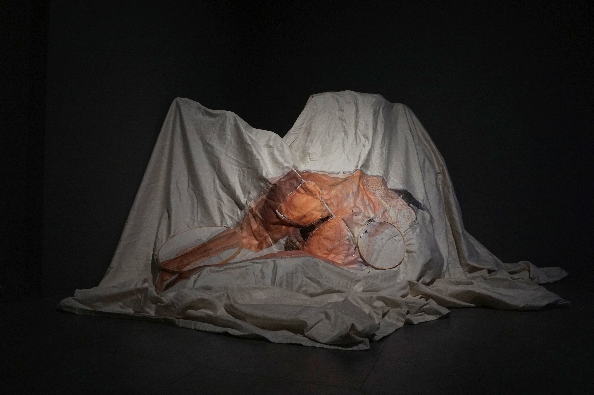
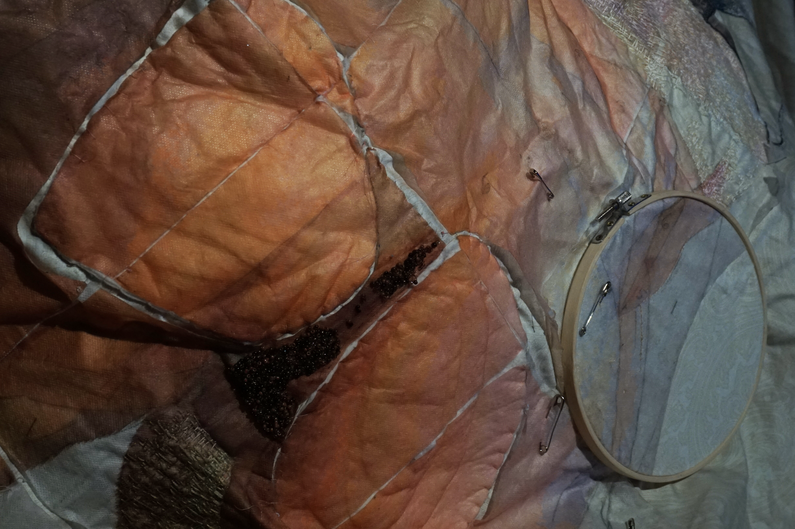

FAKER
Lenzuolo, filo da ricamo, telaio da ricamo, perline, filo, stabilizzatore
Jen LaMastra
FAKER osserva i comportamenti sottili che le donne assumono nella vita quotidiana. Ancora e ancora, una figura senza volto a quattro zampe – una posa che si vede nelle pubblicità, nei film e online – mostra come certi gesti diventino abituali, persino inconsci. Le cuciture lente e ripetitive di LaMastra trasformano il corpo in un luogo in cui la pressione, il desiderio e la paura lasciano il segno. L'opera ci invita a riflettere su quanto spesso la femminilità funga da maschera: qualcosa di modellato per mantenere la pace, sentirsi desiderate o semplicemente stare al sicuro, e su cosa potrebbe significare uscire da quel ruolo.